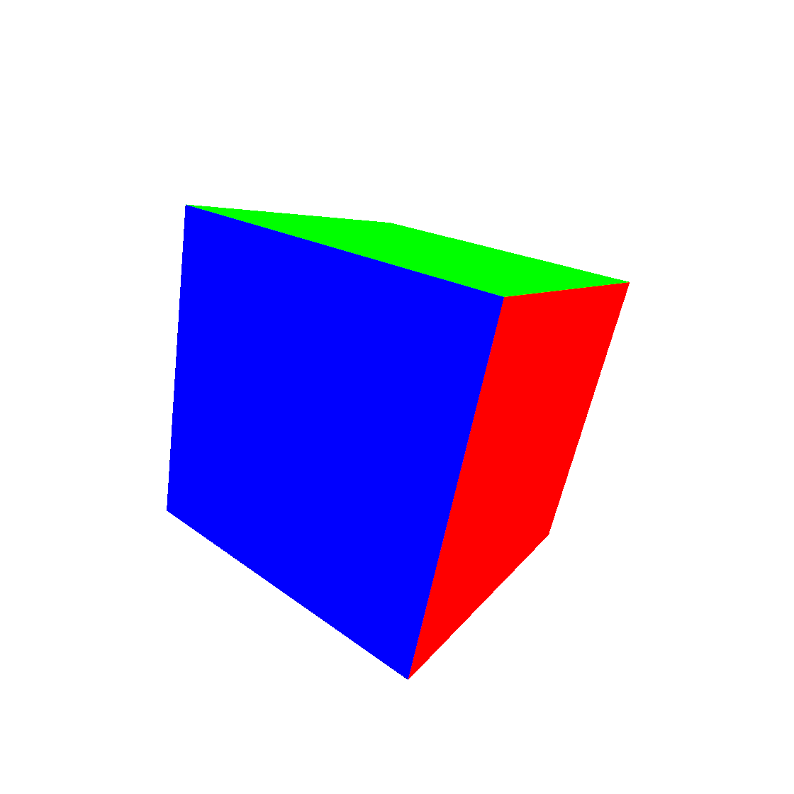

Create a 3D scene with fragment shaders
Three different functions for three different jobs
In this blog post, I revisit the code for the implementation of a 3D scene of a cube with the only use of fragment shaders. Please open an issue to leave comments or questions about this post.
I am going to use the volume ray casting procedure – also known as volume ray marching – to visualize the 3D scene. With the purpose to fully understand the implementation details, here I am going to recognize and possibly separate the different steps involved in the procedure. Have a look at this nice video tutorial from Inigo Quilez.
The implementation shows three functions for three different jobs. The projection function maps the two-dimensional coordinate of the fragment shader to a direction of observation in the 3D scene. The ray casting function finds the distance between the camera and the object surface along a given direction of observation. The signed distance function returns the minimum distance between a point in the 3D scene and the object surface. GLSL does not provide first-class functions. As a consequence, it is fairly difficult to keep things well separated. For example, when we would like to pass function $g$ as an argument to function $f$, we are instead forced to call $g$ inside $f$.
To visualize a 3D scene onto a 2D screen, we should be able to find which point in the scene appears at a given pixel. In other words, we need to map the pixel position – i.e. the fragment coordinates – to a position in the three-dimensional world.
The procedure follows two steps. First, the projection function maps the fragment coordinate to a direction of observation – actually a unit vector in the 3D space. Second, the ray casting function finds the point in the 3D scene we are looking at.
These two operations are sufficient to map the vec2 of the fragment coordinate to the vec3 of a point in the scene. Consequently, we can define the fragment colour as a function of some properties of the point in the 3D space.
The projection function
The projection function takes in input the two-dimensional fragment coordinate and returns a three-dimensional unit vector. The unit vector describes the direction of observation from the camera. The function is bijective, i.e. it establishes a one to one relation between the vec2 in input and the vec3 in output.
vec3 projection (vec2 p) {
float F = -2.;
return normalize(vec3(p.x, p.y, F));
}Listing 1
GLSL implementation of the projection function.
As shown in Listing 1, the returned unit vector depends also on the parameter $F$, which is related to the angle of view of the camera according to the relation $\alpha = \arctan \frac{1}{F}$. We may use the term "focal length" for the parameter $F$ because the angle of view of a camera is usually expressed as $\alpha = \arctan \frac{D}{2F}$, where $D$ is the image format dimension and $F$ the focal length of the camera. In our case $D = 2$ and the formula becomes $\alpha = \arctan \frac{1}{F}$.
Figure 1 shows a geometrical interpretation of the projection function. A screen covering the interval $[-1, 1],$ on the $x$ and $y$-axis, is placed at position $z = F$. Given a point $\vec{p}$ on the screen, with fragment coordinates $x$ and $y$, the projection function returns the unit vector $\vec{p}/|\vec{p}|$, with $\vec{p} = (x, y, F)$.
Figure 1.
Geometric interpretation of the projection function. The projection function returns the unit vector $\vec{p}/|\vec{p}|$, with $\vec{p} = (x, y, F)$, where $x$ and $y$ are the fragment coordinates.
The figure shows only axes $y$ and $z$, the $x$-axis goes inside the screen and it has the same role as the $y$-axis.
The ray casting function
Given the unit vector returned by the projection function, the volume ray casting function returns the approximated distance, along that vector, between the camera and the object in the 3D scene.
The implementation presented in Listing 2 makes use of the signed distance function d, which returns the minimum distance between the point q and the surface. The signed distance function will be discussed in the next section.
float rayCast (vec3 rayOrigin, vec3 rayDirection) {
float t = 0.;
for (int i = 0; i < 100; i++) {
vec3 q = rayOrigin + t * rayDirection;
float h = d(q);
if (h < 0.001) {
break;
}
t += h;
if (h > 20.) {
break;
}
}
return t;
}Listing 2.
Function rayCast takes in input the ray origin and the ray direction and returns the distance between the ray origin and the intercepted point at the surface.
Function d is the signed distance function and it will be discussed in the next section.
Condition h < 0.001 means that the approximated distance differs from the correct one by less than $0.001$.
Condition h > 20 means that objects farther than $20$ units are not visible.
For instance, Figure 2 shows a ray starting at the camera position $Q_0$ and intercepting the sphere surface at point $Q$. Intermediate points $Q_1$, $Q_2$, …, $Q_n$ represent the intermediate values of point q = rayOrigin + t * rayDirection at each loop. In general, at each loop the approximation is better: $Q_n$ is nearer than $Q_{n - 1}$.
Figure 2.
The volume ray casting function calculates the distance between the ray origin $Q_0$ – the camera position – and the intercepted point $Q$ (if any) at the object surface. Intermediate points $Q_1$, $Q_2$ and so on represent the intermediate values of point q = rayOrigin + t * rayDirection at each loop. The radius of the circle at each intermediate point shows the distance h = d(q) between the point and the surface.
The signed distance function
In the previous section, we assumed to have the signed distance function d called inside the ray casting procedure. This section will introduce the function.
The signed distance function is the most interesting part of our algorithm because it describes the 3D scene and, consequently, changes from scene to scene.
Given a surface $S$ in a metric space and a point $\vec{q}$ in that space, the signed distance function (aka SDF) returns the minimum distance of $\vec{q}$ from the surface. For example, the distance of point $\vec{q}$ from a sphere of radius $r$ centred at the origin is $d(\vec{q}) = |\vec{q}| - r$. Note that the function returns positive or negative values – hence the term signed. As a convention, here we are using positive values for points outside the sphere and negative ones for points inside it.
float sphereSDF (vec3 q) {
return distance(q) - r;
}Listing 3.
GLSL implementation of the signed distance function (SDF) of a sphere of radius $r$ centred at the origin.
Similarly, it is possible to define the signed distance function of a box centred at the origin and oriented with its sides parallel with the coordinate axis. For the derivation, have a look at this video from Inigo Quilez.
float cubeSDF (vec3 q) {
vec3 s = vec3(0.5);
return length(max(abs(q) - s, 0));
}Listing 4.
GLSL implementation of the signed distance function (SDF) of a box of sides $2s$ centred at the origin. The function implements a cube of side $1$.
Moreover, the normal vector at any point on the surface can be defined by means of the gradient of the surface SDF: $$ \vec{n}(\vec{q}) = \frac{\nabla d(\vec{q})}{|\nabla d(\vec{q})|} $$
The numerical implementation of the normal vector is presented in Listing 3, it makes use of the symmetric derivative numerical method.
vec3 normal (vec3 q) {
vec2 e = vec2(0.0001, 0.);
return normalize(vec3(
d(q + e.xyy) - d(q - e.xyy),
d(q + e.yxy) - d(q - e.yxy),
d(q + e.yyx) - d(q - e.yyx)
));
}Listing 5.
GLSL implementation of the normal vector at point $\vec{q}$ on the surface described by the SDF function $d$. The symmetric derivative uses a value of $\epsilon = 0.0001$ which, in general, needs to be adjusted according to the surface shape.
The 3D scene
The above sections describe how to define a 3D scene and how to map the fragment coordinates to a point in the 3D scene. Consequently, we can assign the fragColor depending on some properties of the vec3 vector in the three-dimensional space.
void main () {
vec2 p = vUv;
// Center coordinate
p = 2. * p - vec2(1.);
// Set focal length and camera position
float F = -1.5;
vec3 rayOrigin = vec3(0., 0., 2.);
// Find the ray direction
vec3 rayDirection = projection(p, F);
// Calculate distance between
// the camera and the surface
float t = rayCast (rayOrigin, rayDirection);
// Initialize color
vec3 color = vec3(1.);
// Set color to the normal if the object
// is not too far
if (t < 20.) {
// Find the point in the 3D space
// and the surface normal
vec3 q = rayOrigin + t * rayDirection;
vec3 normal = calcNormal(q);
color = normalize(normal);
}
gl_FragColor = vec4(color, 1.);
}Listing 6.
The main function produces a 3D cube with faces coloured according to their normal vector. In order to better visualize the cube, in the image below the cube has been slightly rotated by means of the Rodrigues' rotation formula.

Please have a look at the following npm module to apply the cube rotation in the main function.
Please suggest improvements and corrections opening an issue on the website repository, thanks.